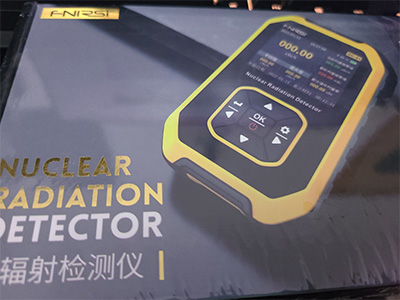
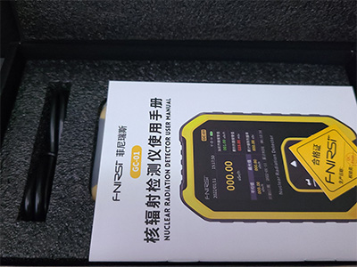
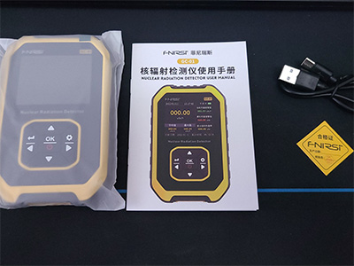
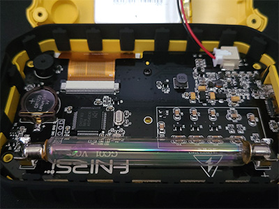
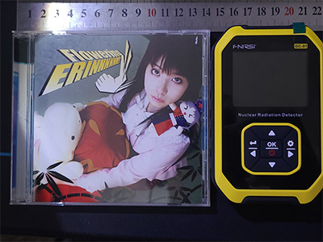
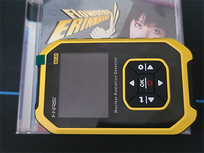
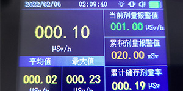
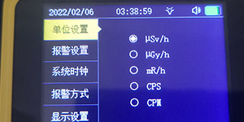

我很早就注意到这款中国盖革计数器了，所以我买了，总结一下使用感受。
这篇文章在我的博客与Bilibili也有同步
参考：博客-FNIRSI GC-01 评测
参考：Bilibili-FNIRSI GC-01 评测 500元内最强辐射仪？
FNIRSI GC-01 是使用盖革米勒管的辐射测量仪（盖革计数器）。
功能包括：
可以测量剂量率 测量范围非常宽，从0.01μSv/h-10mSv/h，因此即使在剂量率高的地方也可以毫无问题地使用。
累计剂量从0.00μSv-500mSv
供电电池为3.7V 1100mAh锂电池 厂家宣传可使用10H左右，我觉得没什么问题
另外还使用了3V纽扣电池作为时钟供电，这个设计我觉得还不错，不用经常校准了
可以显示时间内剂量的直方图。
这款设备带有加固外壳，侧面有橡胶嵌件，可提供更好的抓握力和减震效果。
它给人的印象是设计用于在困难的条件下工作，并被广泛了解的户外爱好者使用。
您收到的物品类似于下图。
|  |  |
|  |  |
|  |  |
由于 GC-01 并没有能量补偿，手册里也没有写，所以不清楚它的方向特性。
但是有一点需要注意，它的盖革管在机身的右侧，使用时请注意。
屏幕看起来像这样。
主界面有两个区块，从左至右：剂量率、30 s平均剂量率、最大剂量率（同上）、当前剂量报警值、累计剂量报警值、累计存储剂量率、以在最上下的Dock栏
您可以长按右方向键进入设置在五种显示单位之间切换
|  |  |
报警音量有些大，如果在公共场合使用可能会突然吓到别人，我推荐在外使用仅开启指示灯和震动报警。
因此如果您去电影院等必须安静的地方，需要提前更改设置。
参考：正确的使用盖革计数器-第3点详解
它不能发出辐射的粒子检测音，只能报警，请注意
如果你想找到它的报警方式，你可以在这里找到它们。
参考：GC-01靠近辐射源的反应速度与报警音
通过在附近放置辐射源来检查反应速率。
Am-241密封源接近仪器。同时报警设置为1μSv/h，并响起报警。
跨型号比较是不准确的，由于 GC-01 没有能量补偿，所以我将比较与有能量补偿的机型
Am-241光子源
GC-01:Avg:0.75 μSv/h Max:1.6 μSv/h
具有能量补偿的机型：0.26 μSv/h
Th-232链源
GC-01:Avg: - μSv/h Max:0.6 μSv/h
具有能量补偿的机型：0.35 μSv/h
GC-01 是中国500元以下目前提供的最好的剂量计之一，同时价格也很便宜
它是一种既用于寻找辐射源又用于显示辐射暴露的仪器
对大多数源具有足够的灵敏度,尽管它会高估一些能量的射线，
而且由于快速响应带来的相应代价，我们推荐用于测量空气剂量时离地1m以上并且计算单位时间内的平均值
另外。通常情况下，您会去购买它的商店并要求修理，但是对于辐射测量仪器，有时会通过相当随意（？）的途径销售它们，因此您需要注意这一点。